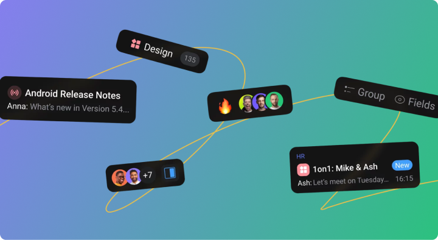

How to Lead Productive Virtual Meetings
Discover how to run productive syncs that enhance team collaboration, and the best tips and tools for hosting them.

Virtual meetings are now a key part of the modern workplace. Remote workers often connect online, and office employees spend one to three hours weekly in meetings. But it's not just about how long the meetings last – it's about how well you use that time. You want to ensure teammates don't leave feeling they would have preferred a simple message instead.
A well-run virtual meeting allows colleagues from around the world to connect easily. Knowing how to make the most of these meetings is essential for making them productive and enjoyable. Read our article and learn right away.
How virtual meetings benefit your business
There are several compelling reasons to maintain a regular schedule for syncs:
- Improved team collaboration. Virtual meetings contribute to team-building practices by allowing for real-time communication and collaboration.
- Increased productivity. Well-structured virtual meetings can help teams make faster decisions and align on tasks more efficiently.
- Flexibility. Virtual meetings enable participants to join from anywhere, making it easier for remote and hybrid teams to stay connected.
- Cost savings. Conducting meetings online reduces travel expenses and minimizes time spent commuting.
Common challenges faced in virtual meetings
While virtual meetings can be incredibly beneficial, they also come with challenges that can hinder productivity if not addressed. Recognizing these issues upfront is the way to avoid common pitfalls and make the most out of your virtual meetings.
- Technical Issues. Complicated meeting platforms, poor network connections, and unfamiliar software can disrupt virtual meetings.
- Lack of engagement. In virtual settings participants can easily tune out, get distracted, or multitask, which can lead to a lack of participation and engagement.
- Miscommunication. The absence of non-verbal cues in virtual meetings can sometimes result in misunderstandings, especially when people are talking over each other or dealing with delays in audio.
- Time zone differences. For global teams, coordinating meeting times that suit everyone’s schedules can be a logistical challenge.
- Unclear agendas. Without a clear structure or agenda, any meetings can go off track and result in wasted time.
Tips to plan a productive virtual meeting
The success of any meeting begins with thoughtful preparation. Just as you would plan a face-to-face meeting, virtual meetings require an agenda, clear goals, and the right tools to ensure everyone is aligned. Here's how to plan a virtual meeting that drives results:
Set a clear agenda
A well-defined agenda that is shared in advance keeps the meeting focused and ensures that all team members are prepared and know what will be discussed.
Choose the right time
Consider the time zones of all participants and select a time that works for everyone.
Send reminders
Send calendar invites and reminders before the meeting to make sure everyone knows the time and has the details to join.
Assign roles
For larger meetings, assign roles such as facilitator, note-taker, and timekeeper. This ensures the meeting runs smoothly, stays on track, and helps you feel supported in managing everything.
Virtual meeting best practices
Once the meeting begins, follow best practices to keep the conversation flowing and ensure productivity. Here are some top tips on how you do that:
Start on time
Be respectful of your schedule and that of others by always starting your meetings on time. If you’re waiting for late participants, don’t delay more than five minutes.
Keep cameras on (if possible)
Encourage participants to turn on their cameras. Seeing everyone's faces creates a more connected and engaged environment, mimicking in-person interactions.
Use mute when needed
To reduce background noise and interruptions, ask participants to mute themselves when they're not speaking. For large meetings, delegate the task of monitoring audio and assisting participants with unmuting to someone else.
Encourage participation
Engagement can be a challenge in virtual meetings, so it's essential to actively encourage participation. Ask open-ended questions, solicit feedback, and make space for quieter participants to contribute.
Use visuals and collaboration tools
Visuals, such as slides, infographics, or whiteboards, can help illustrate key points and keep participants engaged. Collaboration tools like shared documents or in-meeting task creation can further improve communication.
Wrap-up key points
At the end of the meeting, recap the key decisions made and the next steps. Make sure that everyone is clear on their action items and timelines before the meeting concludes.
Keep it light
Encourage colleagues to customize their backgrounds with various themes or incorporate sound effects during discussions, ensuring that everyone stays engaged and relaxed throughout the call.
5 essential tools for virtual meetings
Using the right tools can make a difference in how productive your virtual meetings are. Choose the right one for your needs:
- Zoom. One of the most widely used video conferencing tools, Zoom offers features like screen sharing, breakout rooms, and cloud recording, making it ideal for virtual meetings of any size.
- Orchestra. An all-in-one collaboration platform that enables teams to maintain topic-based communication and stay on the same page. Its real-time messaging features make it easy for teams to initiate virtual meetings directly from the chat linked to a specific task and automatically receive meeting records when needed.
- Google Meet. A simple and accessible video conferencing tool, especially useful for teams that rely on Google Workspace for other tools like Gmail, Google Docs, and Google Calendar.
- Slack. While it is primarily known as a messaging tool, it also offers built-in video call functionality, which can be useful for quick team check-ins or smaller meetings.
- Microsoft Teams. The product combines video conferencing, chat, and collaboration tools, making it a great choice for organizations already using the Microsoft ecosystem.
Elevate your virtual meetings with Orchestra
Orchestra offers unique management tools that help streamline your workflow, virtual meetings included.

Make your communication seamless by using these video conferencing features:
- Built-in voice and video tools. Integrated video and voice calling options eliminate the need to switch between multiple platforms. With everything in one place, from tasks to documents, you can ensure that both connection and context are maintained.
- Real-time collaboration. During virtual meetings, teammates can create and assign tasks directly from the conversation. This ensures that everyone leaves the meeting with clear action items and deadlines.
- Meeting notes. All meeting notes, tasks, and documentation are stored in the same location. This means that even after the meeting ends, team members can easily refer back to key points, decisions, and next steps.
Virtual meetings are here to stay, and with the right strategies and tools, they can be just as productive — if not more so — than in-person meetings. Start by choosing the right tool that matches your work goals and functional needs.
FAQ
What are the best tools for virtual meetings?
Some of the best tools for virtual meetings include Zoom, Orchestra Microsoft Teams, Google Meet, and Slack.
How do I keep participants engaged during virtual meetings?
Encourage participation by asking open-ended questions, using visuals, and creating space for everyone to contribute.
How long should a virtual meeting last?
Virtual meetings should ideally be kept under one hour. For longer meetings, consider adding breaks to keep participants engaged.
What is the ideal time for scheduling virtual meetings?
When scheduling virtual meetings, aim to find a time that works for all participants, considering time zone differences.
How do I improve communication in virtual meetings?
Use tools like Orchestra to streamline communication by integrating chats, tasks, and documents in one place. Encourage active participation and be mindful of time zone differences.